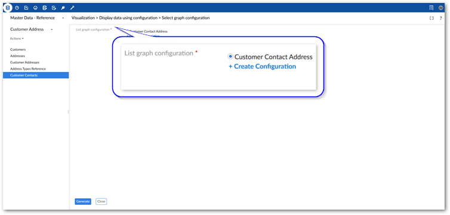
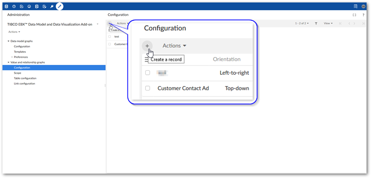
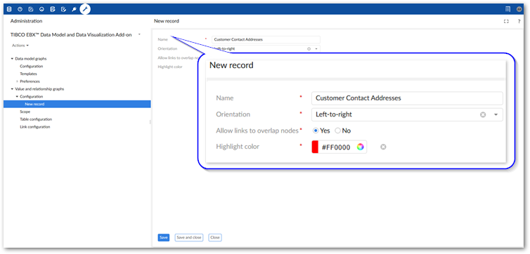
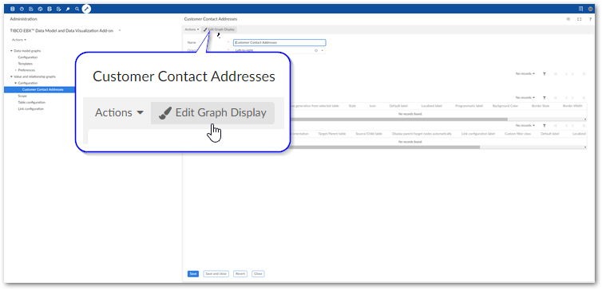
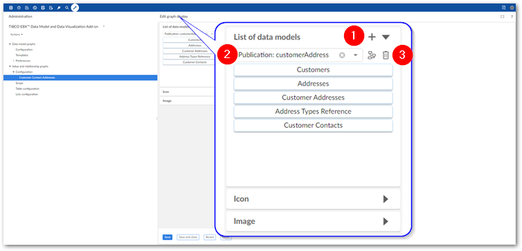
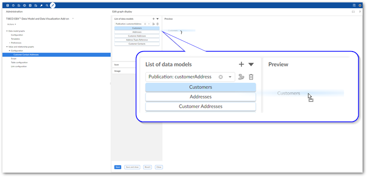
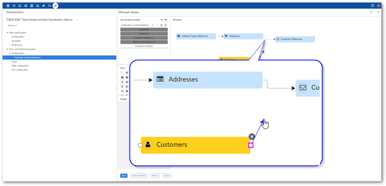
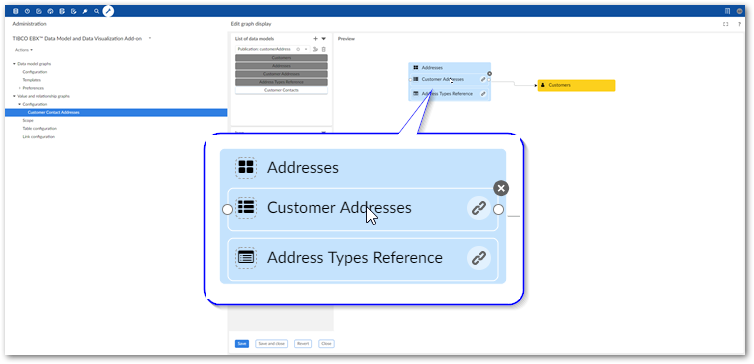
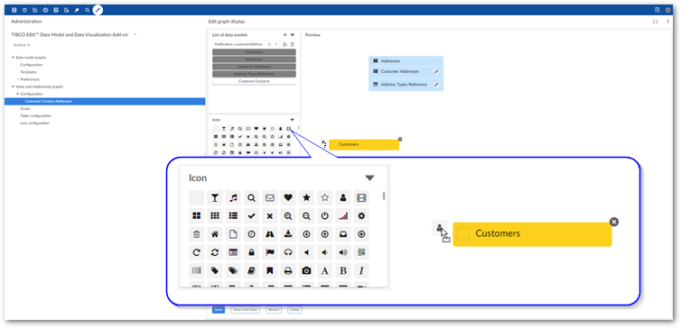
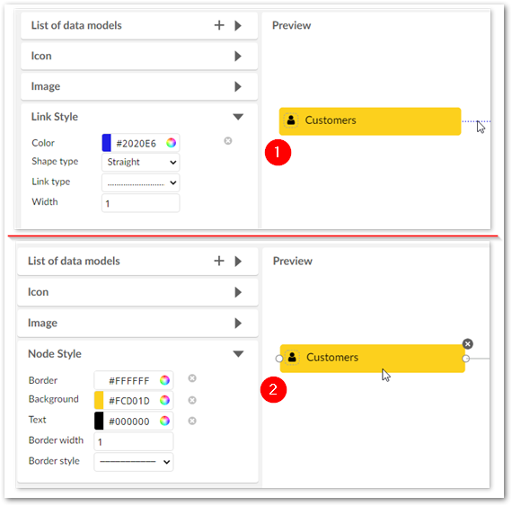

The add-on has a drag-and-drop enabled configuration editor. The editor allows you to create new, or edit existing data value graph configurations. Of course, you can choose to create and edit configuration options manually. However, using the editor provides the following advantages:
You get immediate visual feedback on changes to the configuration.
The add-on automatically handles the creation of settings required to add tables, create links to display relationships, and setting options to customize display.
The editor is accessible from a table even when no graph exists. This prevents you from having to navigate in EBX® to the Administration panel in the Advanced perspective to create a new graph.
The following describes how to use the editor to create a data value and relationship graph:
Create a configuration using one of the following methods:
From a table: select one or more records and from the Actions menu choose Visualization > Display data using configuration. In the window that displays, select Create Configuration.

From the Administration panel: Navigate to TIBCO EBX® Data Model and Data Visualization Add-on > Value and relationship graphs > Configuration. Select the '+' icon to create a new configuration.

Fill in the required fields and select Save. For more details about the fields and options, hover over the label and select the '?' icon to see its tooltip.

Use the editor to choose data models and add tables:
Enter the editor by selecting Edit Graph Display.

In the List of data models sidebar, add one or more data models to the configuration:

1) | Select the '+' icon to add an entry to the list of data models. |
2) | Use the menu to select the desired data model. |
3) | Use these icons to display a graph of the selected data model, or remove this model from the list, respectively. |
Drag tables to the Preview pane.
These are the tables that contain the data you want to display when the graph is generated. To generate this graph it must be accessible from one of the included table's Actions menu after choosing Visualization > Display data using configuration. By default, this is the first table you add to the graph. You can change this by exiting the editor and adjusting each table's Allow generation from selected table setting.

Create relationships between tables:
Display as lines: In the Preview pane, hover over a table and drag one of its connection points to a point on another table.

Display as containers: In the Preview pane, drag one table onto another. The table you drag and add becomes a child of the other node.

Optionally, customize display:
From the Icon sidebar, drag an icon to a table node in the Preview pane.

Change node and line appearance:

1) | Select a link and use the options in the Link Style sidebar to adjust link display. |
2) | Select a node and use the options in the Node Style sidebar to alter the node display. |
Save and close.
The following actions are available in the Preview pane:
Create links | Hover your mouse over a table node and drag one of its connection points to create a link between tables. |
Remove tables and links | Select the table or link and click the 'x' icon to delete. |
View table configuration details | Double-click to view and edit table configuration details. |
View link configuration details | For links displayed as lines, double-click the line. For links displayed as containers, double-click the link icon on the table node. |